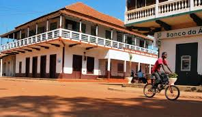

Experiências
- Roteiros pela savana
- Interação com comunidades locais
- Observação da natureza
Sobre a região
Gabú situa-se no leste da Guiné-Bissau e tem importância histórica como parte do antigo Reino de Kaabu. A região é marcada por práticas agrícolas, mercados locais e tradições Mandinga; visitantes encontram paisagens rurais, música e hospitalidade comunitária.
Voltar ao Início